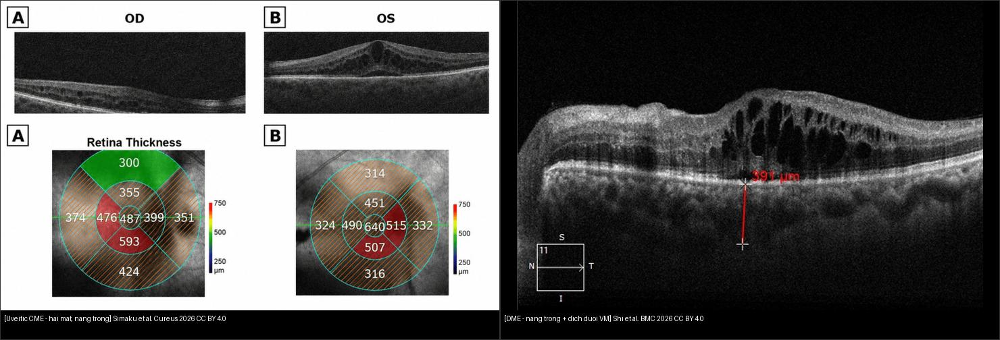
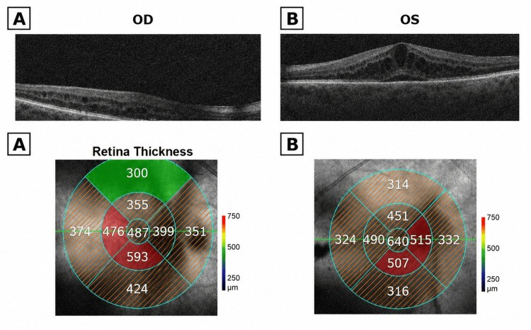
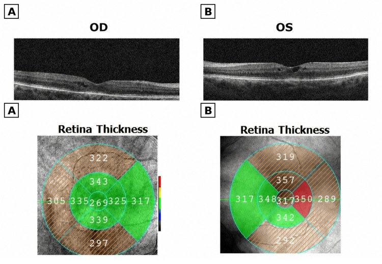
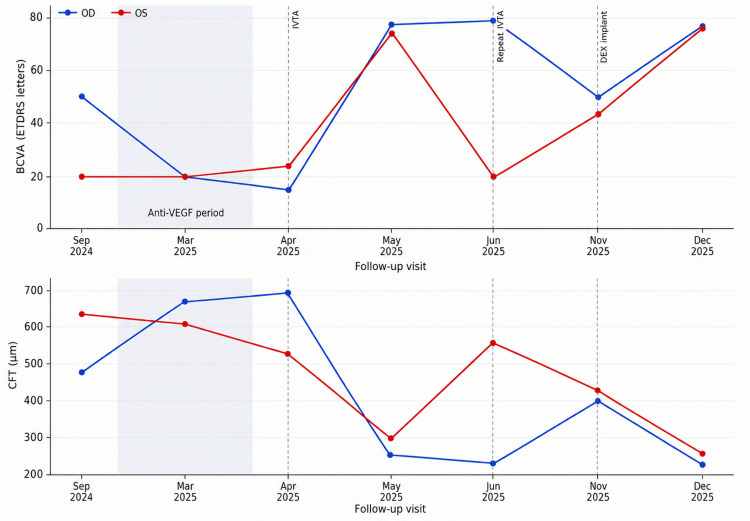

446 — Phù hoàng điểm viêm (uveitic CME) vs DME: khi anti-VEGF thất bại / Uveitic cystoid macular edema
Tags: pattern:phu-hoang-diem-viem vung:hoang-diem protocol:OCT-hoang-diem
Mức chắc chắn (certainty): ca nguyên văn (verbatim case) — theo dõi dọc 1 ca Simaku et al., Cureus 2026 (CC BY 4.0, PMCID PMC13270606); số liệu lấy nguyên từ bảng + OCT gốc, không suy diễn.
1. Tổng quan — viêm thì trị steroid, thiếu máu thì trị VEGF + số CFT nằm lòng
- Phù hoàng điểm viêm (uveitic cystoid macular edema, CME): viêm nội nhãn phá hàng rào máu–võng mạc (blood-retinal barrier) → dịch tích trong võng mạc tạo khoang nang. TẠI SAO khác DME: chất trung gian chính là cytokine viêm (IL-6, TNF-α) chứ không phải VEGF — nên anti-VEGF đơn thuần thường không đủ, phải ức chế viêm bằng corticosteroid nội nhãn.
- TẠI SAO OCT phân biệt được: cả hai đều nang tối (hyporeflective) vì nước hấp thu tán xạ ít — cái quyết định là bối cảnh lâm sàng + đáp ứng điều trị, không phải hình thái nang. Ca này chính là minh chứng: 3 mũi anti-VEGF làm nặng thêm.
- Số nằm lòng (ca Simaku 2026, nữ 66 tuổi, 2 mắt, theo dõi 15 tháng):
- Nền: CFT 487 µm (OD) / 640 µm (OS), thị lực 50 / 20 ETDRS, nhãn áp 13/12 mmHg.
- Sau 3 mũi anti-VEGF: CFT tăng 673 / 612 µm, thị lực 20/20 — thất bại (đúng 3 mũi tải hàng tháng, 10/2024–3/2025).
- Trước khi đổi thuốc: CFT 699 / 535 µm, thị lực 15/24 (đáy xấu nhất).
- Sau triamcinolone nội nhãn: CFT 269 / 317 µm (giảm 61% / 41%), thị lực 77 / 74 ETDRS — đáp ứng rõ.
- Sau Ozurdex (dexamethasone implant): CFT 243 / 278 µm, thị lực 77 / 76 — kiểm soát bền (implant tác dụng ~4–6 tháng).
- Ngưỡng nhớ: CFT ≥ 300 µm trung tâm = phù có ý nghĩa (khớp bài 441/443); giảm > 10% CFT hoặc tăng ≥ 5 chữ ETDRS = đáp ứng điều trị thật.
2. Gamut phù hoàng điểm 2 mắt — 3 câu chia hướng điều trị
- Viêm nội nhãn (mắt đỏ/đau, dạng uveitis, dấu tế bào–flare, viêm màng mạch): uveitic CME — steroid ± ức chế miễn dịch, không phải anti-VEGF trước tiên.
- Đái tháo đường + nang trong + 2 bên, không viêm: DME — anti-VEGF first-line, đáp ứng tốt (bài 443).
- Tắc tĩnh mạch (XH + giãn TM 1 góc hoặc 4 góc): RVO-ME — anti-VEGF ± steroid, phân thiếu máu (bài 444).
- Sau mổ đục thủy tinh thể (phakic/pseudophakic + dấu Irvine-Gass): CME giả đục thủy tinh thể — NSAID tại chỗ ± steroid dưới Tenon, thường tự khỏi 3–6 tháng.
- Thuốc (prostaglandin nhỏ mắt, acid nicotinic, thuốc chống ung thư): CME do thuốc — ngưng thuốc nghi ngờ trước khi làm thủ thuật xâm lấn.
3. Bảng so sánh phân biệt (ma trận đối chiếu)
| Thực thể (entity) | Hình ảnh điển hình | Chốt vào (rule-in) | Chốt loại (rule-out) | Gợi ý xác nhận |
|---|---|---|---|---|
| Uveitic CME | Nang trong 2 bên + dấu viêm (tế bào–flare) + đáp ứng steroid | Bối cảnh viêm + anti-VEGF thất bại + steroid hiệu quả | Không dấu viêm + ĐTĐ → DME | Siêu âm sinh học/AS-OCT + steroid ± ức chế miễn dịch |
| DME | Nang trong + vòng xuất tiết + ĐTĐ lâu | ĐTĐ + 2 bên đối xứng + anti-VEGF hiệu quả | Có dấu viêm rõ → uveitic | HbA1c + anti-VEGF 3 tải + PRN (bài 443) |
| RVO-ME | Phù + XH + TM giãn theo vùng | XH + TM giãn một bên | 2 bên đối xứng → DME/uveitic | FFA/OCT + anti-VEGF (bài 444) |
| Irvine-Gass | Sau mổ TTT + nang nhẹ + mắt ít viêm | Mổ TTT gần đây + CME tự khỏi 3–6 tháng | Viêm nặng lan rộng → uveitic | NSAID tại chỗ ± steroid dưới Tenon |
| CME do thuốc | Nang + tiền sử thuốc (PG, acid nicotinic) | Tiền sử thuốc + CME 2 bên không rõ nguyên nhân | Ngưng thuốc mà hết → xác nhận | Ngưng thuốc nghi ngờ, theo dõi OCT |

Trái: uveitic CME 2 bên, nang trong, mũi tên CFT 487 µm (OD) — Simaku et al., Cureus 2026 Fig. 1, CC BY 4.0. Phải: DME nang trong + dịch dưới võng mạc — Shi et al., BMC Ophthalmology 2026 Fig. 3, CC BY 4.0. Ảnh ghép letterbox. Hai hình thái nang gần như trùng nhau — bối cảnh lâm sàng mới phân biệt, OCT một mình không đủ.Quiz composite: che 2 nhãn, hỏi bên nào nên bắt đầu anti-VEGF, bên nào nên nghĩ steroid?
Bấm để hiện đáp án
- Trái = uveitic CME — cơ chế viêm chiếm ưu thế → steroid nội nhãn ± ức chế miễn dịch (ca này anti-VEGF 3 mũi còn làm nặng thêm).
- Phải = DME — VEGF chiếm ưu thế → anti-VEGF first-line (bài 443).
- Bẫy: nang trên OCT giống hệt nhau — quyết định bằng dấu viêm, tiền sử ĐTĐ, và đáp ứng thuốc, không bằng hình thái.
"Thất bại anti-VEGF" — khi nào đổi sang steroid?
- Thất bại (định nghĩa thực dụng): sau 3 mũi tải hàng tháng mà CFT không giảm > 10% hoặc thị lực không cải thiện — như ca này (CFT 487 → 673 µm: còn tệ hơn).
- Đổi hướng: nghĩ cơ chế viêm (cytokine) → triamcinolone nội nhãn (tác dụng nhanh) hoặc dexamethasone implant (duy trì 4–6 tháng) — ca này giảm CFT 61%/41% ngay mũi đầu.
- Cảnh giác steroid: theo dõi nhãn áp (nguy cơ tăng nhãn áp do steroid — steroid responder) và đục thủy tinh thể ở mắt còn thể thủy tinh; ca này đã đặt TTT 2 mắt + nhãn áp luôn trong ngưỡng.
4. Protocol chụp + theo dõi
- OCT hoàng điểm (macular cube + ETDRS grid): đo CFT + thể tích võng mạc trung tâm mỗi lần — quyết định chích hay không (bơm theo OCT, không theo cảm giác).
- Đánh giá viêm nền: soi đèn khe (tế bào–flare), AS-OCT/siêu âm sinh học (thể mi–hoàng điểm), tìm nguyên nhân uveitis (nhiễm trùng, tự miễn, HLA-B27, sarcoid, lao).
- Phác đồ ca này: anti-VEGF × 3 (thất bại) → triamcinolone × 2 → Ozurdex 2 mắt — mỗi bước đánh giá lại bằng OCT + thị lực; tái khám sát vì bệnh dao động 2 mắt không đối xứng.
- Theo dõi steroid: nhãn áp mỗi lần (nguy cơ glaucoma do steroid), đáy mắt, thị trường khi dùng dài — ngưng/đổi khi nhãn áp tăng dai dẳng.
flowchart TD
A[Phù hoàng điểm 2 bên, CFT >= 300 µm] --> B{Bối cảnh viêm: tế bào-flare, đau, uveitis?}
B -->|Có| C[Uveitic CME: steroid nội nhãn + ức chế miễn dịch + trị nguyên nhân]
B -->|Không| D{ĐTĐ?}
D -->|Có| E[DME: anti-VEGF 3 tải + PRN]
D -->|Không| F{XH + TM giãn?}
F -->|Có| G[RVO-ME: anti-VEGF + phân thiếu máu]
F -->|Không| H{Sau mổ TTT gần đây / thuốc?}
H -->|TTT| I[Irvine-Gass: NSAID + steroid dưới Tenon, theo dõi 3-6 tháng]
H -->|Thuốc| J[CME do thuốc: ngưng thuốc nghi ngờ]
E --> K{Sau 3 mũi CFT không giảm >10%?}
K -->|Có - anti-VEGF thất bại| L[Nghĩ cơ chế viêm: chuyển triamcinolone/Ozurdex]
5. Biến thể bình thường và cạm bẫy
- Nang trên OCT giống hệt nhau giữa uveitic CME và DME — đừng chẩn đoán bằng hình thái; hỏi viêm + ĐTĐ + RVO, và nhìn đáp ứng thuốc.
- Anti-VEGF tiếp tục dù đã thất bại: tiêm thêm nhiều mũi vô ích khi CFT còn tăng — nhận diện sau 3 mũi tải, đổi sang steroid (như ca này: 487 → 673 µm là dấu hiệu dừng lại).
- Bệnh 2 mắt không đối xứng: cùng điều trị, mắt trái tái phát trước/nặng hơn (CFT 566 µm ở tháng 9) — theo dõi và điều trị theo từng mắt, không giả định song hành.
- Bỏ tái khám = bỏ tái phát: ca này nghỉ tái khám rồi quay lại với CFT 414/439 + thị lực tụt 50/44 — bệnh viêm tái phát nhanh khi thuốc hết tác dụng.
- Tăng nhãn áp do steroid bị bỏ qua: bắt buộc đo nhãn áp mỗi lần sau tiêm steroid; mắt còn thể thủy tinh còn nguy cơ đục nhanh.
- Bỏ sót nguyên nhân nhiễm trùng: trước khi dùng steroid dài, loại nhiễm trùng (lao, toxoplasma, CMV) — steroid mù có thể làm bùng viêm nhiễm trùng.
6. Tự lượng giá — Blind Quiz
Ca 1 — Nữ 66 tuổi, mờ mắt 2 bên, OCT nang trong 2 mắt. Đây là nguyên nhân gì, hướng điều trị?

- Hỏi: CFT 2 mắt bao nhiêu? Nang trong hay dưới võng mạc? Điều trị đầu tay?
Bấm để hiện đáp án (findings + chẩn đoán)
- Dấu hiệu (findings): nang trong (intraretinal cysts) 2 bên; bản đồ độ dày trung tâm 487 µm (OD) / 640 µm (OS); mắt trái nặng hơn, khớp thị lực 50 / 20 ETDRS.
- Chẩn đoán (diagnosis): phù hoàng điểm viêm (uveitic CME) trong bối cảnh viêm nội nhãn — vì nang trong + dấu viêm, 2 bên.
- Xử trí: khác DME — nghĩ steroid nội nhãn (ức chế cytokine viêm), không anti-VEGF đơn thuần.
- Nguồn ảnh: Simaku et al., Cureus 2026 Fig. 1 (PMC13270606), CC BY 4.0.
Ca 2 — Sau 3 mũi anti-VEGF, CFT còn tăng (673 µm). Bước tiếp theo?

- Hỏi: ảnh cho thấy điều gì so với nền? Vì sao chuyển thuốc? Ngưỡng "thất bại" anti-VEGF?
Bấm để hiện đáp án (findings + chẩn đoán)
- Dấu hiệu (findings): nang xẹp gần hết — CFT 269 µm (OD) / 317 µm (OS); giảm 61%/41% so với trước steroid (699/535 µm), thị lực 15/24 → 77/74 ETDRS.
- Chẩn đoán (diagnosis): uveitic CME đáp ứng steroid — xác nhận cơ chế viêm chiếm ưu thế.
- Ngưỡng thất bại anti-VEGF: sau 3 mũi tải hàng tháng CFT không giảm > 10% (ca này còn tăng 487 → 673 µm) → đổi triamcinolone/Ozurdex.
- Nguồn ảnh: Simaku et al., Cureus 2026 Fig. 4 (PMC13270606), CC BY 4.0.
Ca 3 — Đồ thị theo dõi 15 tháng. Đọc 2 đường BCVA + CFT, chỉ ra giai đoạn nào thất bại và giai đoạn nào bền?

- Hỏi: vùng nào là giai đoạn anti-VEGF? Mắt nào tái phát trước? Sau Ozurdex ra sao?
Bấm để hiện đáp án (findings + chẩn đoán)
- Dấu hiệu (findings): giai đoạn anti-VEGF (10/2024–3/2025) — CFT 2 mắt đi lên, BCVA đi xuống (thất bại); sau IVTA CFT tụt mạnh, BCVA tăng vọt; tháng 9/2025 mắt trái (OS) tái phát sớm/nặng (CFT 566 µm, BCVA về 20) trong khi OD ổn; sau DEX implant cả 2 mắt hội tụ về CFT 243/278 µm, BCVA 77/76.
- Chẩn đoán (diagnosis): uveitic CME tái phát, tiến triển không đối xứng 2 mắt — cần điều trị theo từng mắt + OCT-guided.
- Bài học: missed follow-up (11/2025) làm tái phát cả 2 mắt — theo dõi sát là phần của điều trị.
- Nguồn ảnh: Simaku et al., Cureus 2026 Fig. 8 (PMC13270606), CC BY 4.0 (đồ thị gốc).
Bài liên quan chéo
- 400 – Tổng quan Mắt
- 441 – OCT hoàng điểm (nang trong vs dịch dưới — DME/AMD)
- 443 – Võng mạc đái tháo đường (DME — đối chiếu chính)
- 444 – Tắc mạch võng mạc (RVO-ME trong gamut phù 2 mắt)
- 422 – Giả u viêm (bệnh viêm hốc mắt–nội nhãn)
- 451 – Bệnh hệ thống ở mắt (nguyên nhân uveitis toàn thân)
Ảnh
446_uveitic-CME-nen_OCT_PMC13270606-Fig1-CCBY.jpg,446_uveitic-CME-sau-triamcinolone_OCT_PMC13270606-Fig4-CCBY.jpg,446_uveitic-CME-sau-Ozurdex_OCT_PMC13270606-Fig7-CCBY.jpg,446_uveitic-CME-dien-bien_OCT_PMC13270606-Fig8-CCBY.jpg— Simaku et al., Cureus 2026 (PMCID: PMC13270606), CC BY 4.0.446_DME-nang-trong_OCT_PMC13182033-Fig3-CCBY.jpg— Shi et al., BMC Ophthalmology 2026 (PMCID: PMC13182033), CC BY 4.0 (ảnh đối chiếu DME).- Chi tiết giấy phép từng ảnh trong
images/CREDITS.md. AuntMinnie: chỉ dẫn link, không tải.
Không dùng để chẩn đoán độc lập khi chưa có người hướng dẫn.